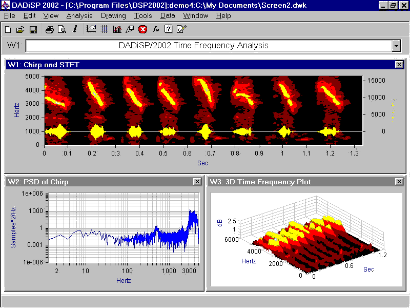
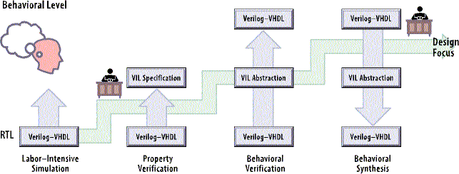
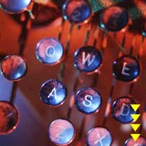

| development |
| home page |
|  | . Software Process Overview Software Process Overview Process research in SERL encompasses both the empirical analysis of processes, and investigation of system infrastructure for process automation. Our empirical analysis research has been investigating and developing methods for using collected process event data to better understand and analyze a process. System infrastructure research has looked at methods for bridging disparate process systems, and applied virtual environments to process automation. . |
|  | Each subsection also describes a validation suite for the implementation of the primitive. . Detection Confidence and Statistical Analysis The Detection Confidence and Statistical Analysis development group is charged with Developing of statistical analyses to assess confidence and uncertainties in detection and parameter estimation This includes statistical tests involving single detectors, multiple gravitational wave detectors acting in concert or in coincidence, and gravitational wave detectors acting in coincidence with other (e. Developing of overall system analysis system tests These are the usual verification and validation functions. Recommending on-line and off-line data analysis system functions. |
|  | We have experience of working in many sectors including insurance, housing, software and telecommunications, and have undertaken Teaching Company Schemes in the manufacturing sector. Previous Research We have actively participated in a number of research projects over the years, all aimed at finding better ways to effectively support organisational process activity - in particular the software process itself, or as the more general business process. This aim is being achieved from two complementary approaches, by a study of process modelling, and by developing new componets-based systems architecture. The default is to files containing postscript compressed as . If you are using a PC, you may not be able to uncompress these versions, however you can do either of three things. |